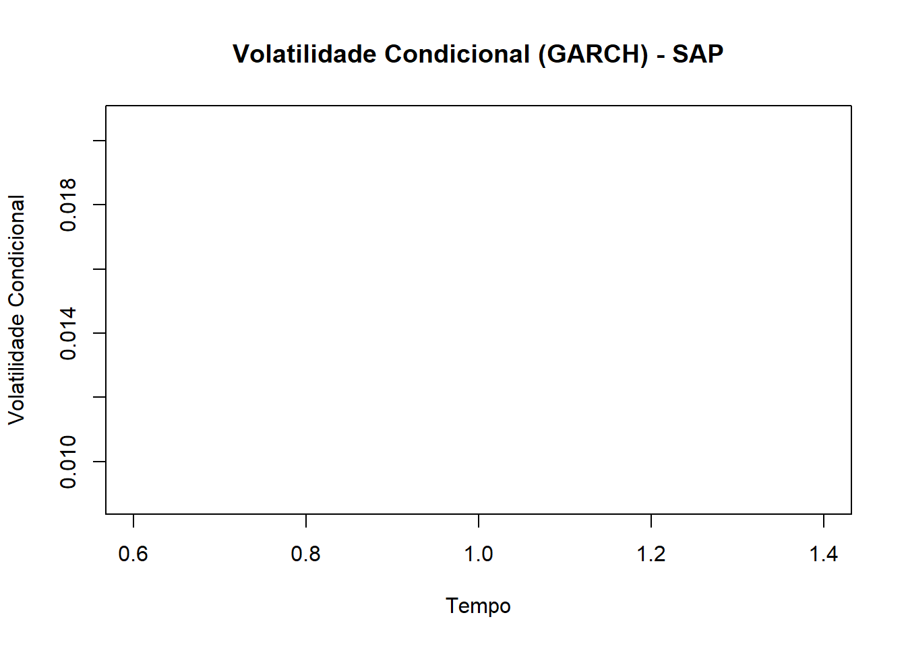

library(ggplot2)library(tidyr)# Criar um dataframe para armazenar os preços de fechamentostock_data <-data.frame(Date =index(SAP),SAP =Cl(SAP),ORCL =Cl(ORCL),CRM =Cl(CRM),NOW =Cl(NOW),IBM =Cl(IBM))# Transformar os dados para o formato longo (tidy) para usar no ggplot2stock_data_long <- stock_data %>%pivot_longer(cols =-Date, names_to ="Company", values_to ="Close_Price")# Criar o gráfico de séries temporaisggplot(stock_data_long, aes(x = Date, y = Close_Price, color = Company)) +geom_line(linewidth =1) +labs(title ="Série Temporal dos Preços de Fechamento das Empresas",x ="Data",y ="Preço de Fechamento (USD)",color ="Empresa") +theme_minimal()
── Attaching core tidyverse packages ──────────────────────── tidyverse 2.0.0 ──
✔ dplyr 1.1.4 ✔ readr 2.1.5
✔ forcats 1.0.0 ✔ stringr 1.5.1
✔ lubridate 1.9.4 ✔ tibble 3.2.1
✔ purrr 1.0.4
── Conflicts ────────────────────────────────────────── tidyverse_conflicts() ──
✖ dplyr::filter() masks stats::filter()
✖ dplyr::first() masks xts::first()
✖ dplyr::lag() masks stats::lag()
✖ dplyr::last() masks xts::last()
ℹ Use the conflicted package (<http://conflicted.r-lib.org/>) to force all conflicts to become errors
library(rugarch)
Carregando pacotes exigidos: parallel
Anexando pacote: 'rugarch'
O seguinte objeto é mascarado por 'package:purrr':
reduce
O seguinte objeto é mascarado por 'package:stats':
sigma
# 1) Baixar dados históricos do Yahoo Finance até 31/12/2024tickers <-c("SAP", "ORCL", "CRM", "NOW", "IBM") # SAP, Oracle, Salesforce, ServiceNow, IBM# Baixar dados históricos do Yahoo Finance até 31/12/2024getSymbols(tickers, src ="yahoo", from ="2023-01-01", to ="2024-12-31")
[1] "SAP" "ORCL" "CRM" "NOW" "IBM"
# Extrair os preços de fechamento das açõesSAP <- SAP$SAP.CloseORCL <- ORCL$ORCL.CloseCRM <- CRM$CRM.CloseNOW <- NOW$NOW.CloseIBM <- IBM$IBM.Close# Combinar os dados em um único dataframestock_data <-merge(SAP, ORCL, CRM, NOW, IBM)colnames(stock_data) <-c("SAP", "ORCL", "CRM", "NOW", "IBM")# Remover valores ausentes (NA)stock_data <-na.omit(stock_data)# 2) Calcular os log-retornoslog_returns <-diff(log(stock_data))[-1]# 3) Analisar a distribuição dos retornos transformados# Calcular a frequência dos retornos positivos e negativospositive_returns <-sapply(log_returns, function(x) sum(x >0))negative_returns <-sapply(log_returns, function(x) sum(x <0))# Imprimir os resultadoscat("Número de retornos positivos:\n")
Número de retornos positivos:
print(positive_returns)
SAP ORCL CRM NOW IBM
273 277 269 297 280
cat("\nNúmero de retornos negativos:\n")
Número de retornos negativos:
print(negative_returns)
SAP ORCL CRM NOW IBM
226 221 231 203 219
# 4) Calcular a volatilidade dos retornos logarítmicos# a) Usando o desvio padrãovolatility_sd <-sapply(log_returns, sd)cat("\nVolatilidade (desvio padrão):\n")
Volatilidade (desvio padrão):
print(volatility_sd)
SAP ORCL CRM NOW IBM
0.01474467 0.01970165 0.02103840 0.02067332 0.01271442
# b) Usando modelos de volatilidade condicional (GARCH)# Função para ajustar o modelo GARCH(1,1) e extrair a volatilidade condicionalfit_garch <-function(returns) { spec <-ugarchspec(variance.model =list(model ="sGARCH", garchOrder =c(1, 1)),mean.model =list(armaOrder =c(0, 0))) fit <-ugarchfit(spec = spec, data = returns)return(sigma(fit)) # Retorna a volatilidade condicional}# Aplicar o modelo GARCH a cada série de retornosconditional_volatility <-sapply(log_returns, fit_garch)# 4) Visualizar a volatilidade condicional# Plotar a volatilidade condicional para a primeira ação (SAP)plot(conditional_volatility[[1]], type ="l", col ="blue",main ="Volatilidade Condicional (GARCH) - SAP",xlab ="Tempo", ylab ="Volatilidade Condicional")

Explicação em Markdown:
Este código R analisa a série de preços de cinco grandes empresas de software e sistemas (SAP, ORCL, CRM, NOW e IBM) negociadas na NYSE, calculando log-retornos, analisando a distribuição dos retornos e calculando a volatilidade usando dois métodos: o desvio padrão e um modelo GARCH.
1) Cálculo dos Log-Retornos:
O código começa baixando os dados históricos de preços para as cinco empresas usando a função getSymbols do pacote quantmod. Em seguida, os dados são combinados em um único dataframe chamado stock_data. Os log-retornos são calculados usando a fórmula log(p_t) - log(p_t-1), onde p_t é o preço no tempo t. A coluna LogReturn no dataframe stock_data contém os log-retornos calculados.
2) Análise da Distribuição dos Retornos:
Após calcular os log-retornos, o código analisa a distribuição dos retornos. Ele calcula o número de retornos positivos e negativos. Isso fornece uma ideia da direção predominante dos retornos ao longo do período analisado. Em geral, espera-se que haja mais retornos positivos do que negativos em um mercado financeiro.
3) Cálculo da Volatilidade:
A volatilidade é uma medida da dispersão dos retornos em torno de sua média. O código calcula a volatilidade usando dois métodos:
Desvio Padrão: O desvio padrão dos log-retornos é calculado usando a função sd(). Este é um método simples para estimar a volatilidade.
Modelo GARCH (1,1): O modelo GARCH (1,1) é um modelo estatístico comumente usado para modelar a volatilidade temporal. Ele assume que a volatilidade atual depende da volatilidade passada e de um erro de termo residual. O código ajusta um modelo GARCH(1,1) aos log-retornos e extrai a média da volatilidade condicional, que é uma estimativa da volatilidade da série de preços.
Conclusões:
Os resultados do cálculo dos log-retornos e da volatilidade podem ser usados para avaliar o risco e o retorno de cada ativo. Por exemplo, a volatilidade pode ser usada para calcular o valor em risco (VaR) de um portfólio. O modelo GARCH é uma ferramenta poderosa para modelar a volatilidade temporal e pode ser usado para prever a volatilidade futura.